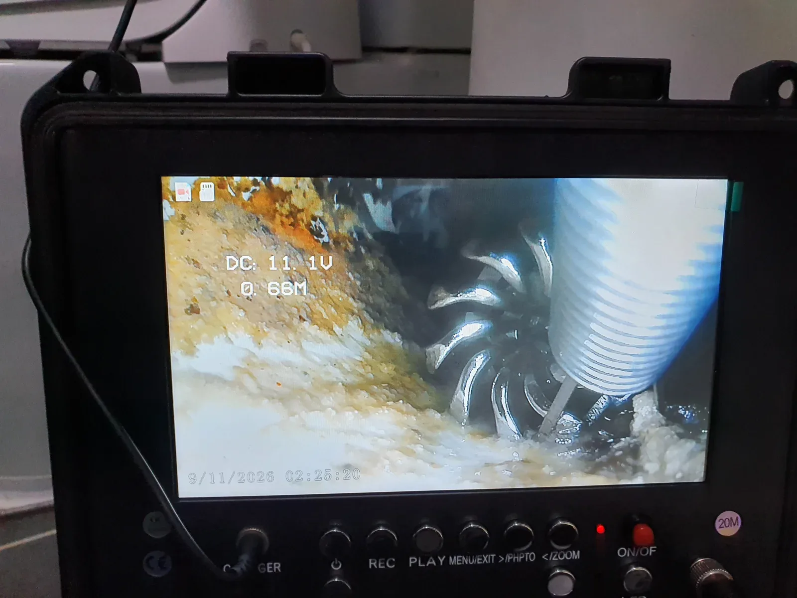
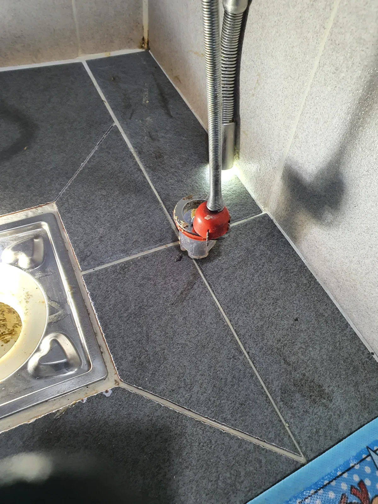

영등포구 대림동 하수구막힘, 현장 도착 후 진단
서울 영등포구 대림동에서 화장실 바닥의 물 빠짐이 원활하지 않아 점검한 하수구막힘 현장입니다. 바닥 배수구는 겉으로 보이는 입구가 열려 있어도 안쪽에 물길을 방해하는 물건이 들어가 있으면 배수가 어려워질 수 있습니다. 이번에는 배관 안으로 떨어진 트랩을 찾아 꺼내는 일이 필요했습니다. 신라건축설비는 바닥 배수구로 내시경을 넣어 내부 상태부터 살폈습니다.
내시경 점검에서 트랩의 위치를 확인한 뒤, 하수구막힘을 해소하려면 해당 부품을 배관 밖으로 회수해야 한다고 판단했습니다. 부품이 있는 위치와 회수 도구가 접근할 방향을 알아야 이후 작업을 정할 수 있었습니다. 배수 상태만 보고 찌꺼기가 쌓였다고 가정하지 않고, 화면에서 확인한 물체를 기준으로 작업 순서를 잡았습니다.
하수구가 막혔을 때 배수구 부품이 함께 사라졌다면 그 사실을 점검 단계에서 알려주는 것이 중요합니다. 이번 대림동 하수구막힘처럼 부품 자체가 원인인 경우에는 물이 잠시 빠지는 것과 부품이 제거된 것을 구분해야 합니다. 내시경으로 위치를 찾는 단계, 고인 물을 빼내는 단계, 집게로 직접 회수하는 단계가 각각 필요한 이유입니다.
1단계: 증상 확인과 필요한 장비 작업
먼저 석션 장비로 배관 안에 고여 있던 물을 빼냈습니다. 물을 제거한 다음 내시경 화면으로 트랩이 놓인 상태를 살피고 집게를 사용할 위치를 확인했습니다. 이번 하수구막힘 작업에서 석션은 고인 물을 처리하고 회수 작업을 준비하는 역할을 맡았습니다. 물만 빼냈다고 마무리할 수 있는 상태가 아니었으므로, 배관에 남아 있는 트랩을 꺼내는 작업으로 이어갔습니다.
배수구 입구에서 손이 닿지 않는 곳에 있는 부품을 잡으려면 도구 끝이 물체에 접근할 수 있어야 합니다. 화면을 보면서 트랩을 집게가 닿을 수 있는 위치로 조정하고 회수 준비를 진행했습니다. 부품이 있다는 사실만 확인하는 데서 그치지 않고, 실제 잡아서 꺼낼 수 있는 위치를 확보하는 것이 이 단계의 목적이었습니다.
영등포구 대림동 하수구막힘은 내시경과 석션, 집게가 서로 다른 역할을 수행한 사례입니다. 내시경은 보이지 않는 배관 내부를 확인하고, 석션은 고인 물을 빼내며, 집게는 원인이 된 부품을 잡아 꺼내는 데 사용했습니다. 장비를 순서대로 사용하는 이유가 분명해야 필요한 작업 범위도 구체적으로 설명할 수 있습니다.

2단계: 원인 구간 처리와 정상 작동 확인
회수할 수 있는 위치로 옮긴 트랩을 이물질 회수용 집게로 잡았습니다. 이후 배수구 밖으로 꺼내 하수구막힘의 직접적인 원인이었던 부품을 제거했습니다. 배관 안에서 위치만 바뀌면 여전히 물길에 영향을 줄 수 있으므로, 이번 작업은 부품을 외부로 회수하는 데까지 진행했습니다. 집게에 잡힌 트랩과 꺼낸 부품을 통해 제거 결과를 확인할 수 있었습니다.
이처럼 배관 안에 떨어진 물건을 다룰 때는 무엇을 꺼냈는지가 중요한 확인 사항입니다. 내시경에서 찾은 대상과 실제 회수한 부품을 연결해 볼 수 있어야 원인에 맞는 조치가 이루어졌는지 알 수 있습니다. 이번 현장은 내부 위치 확인부터 회수 준비, 직접 제거까지 이어지는 방식으로 작업했습니다.
트랩을 꺼낸 뒤에는 물을 흘려 배수 상태를 확인했습니다. 하수구막힘 원인을 제거한 결과가 실제 물 흐름으로 이어지는지 살피기 위한 통수 과정입니다. 도구를 배관에 넣고 빼는 작업만으로 종료하지 않고, 물이 정상적으로 내려가는 것을 확인한 뒤 마무리했습니다. 배수구 안으로 들어갔던 부품을 꺼내고 정상 통수까지 확인한 것이 이번 조치의 결과입니다.

작업 결과와 재발 방지 안내
대림동 하수구막힘 현장은 배관에 빠진 트랩을 회수한 뒤 정상 배수를 확인했습니다. 평소 분리해서 청소하는 부품이라도 배관 속으로 떨어지면 별도의 회수 작업이 필요할 수 있습니다. 청소할 때는 분리한 부품을 배수구 가장자리에 걸쳐 두지 말고 따로 보관한 뒤, 빠진 부품이 없는지 확인해 주세요.
부품을 떨어뜨린 뒤 하수구막힘이 생겼다면 긴 막대 등으로 안쪽을 무작정 밀기보다 사용을 멈추고 상태를 확인하는 편이 좋습니다. 부품의 모양, 떨어진 시점, 이후 물 빠짐의 변화는 작업 방향을 정하는 데 도움이 되는 정보입니다. 외부에서 보이는 배수구 사진과 빠진 부품에 대한 설명을 함께 준비하면 상담할 때 상황을 더 정확히 전달할 수 있습니다.
영등포구 대림동에서 하수구 뚫는 업체에 문의하실 때에는 단순 통수 여부뿐 아니라 이물질 위치를 어떻게 확인하고 회수할 것인지도 함께 살펴보세요. 이번 하수구막힘 사례에서 신라건축설비는 내시경으로 원인을 찾고 석션 후 집게로 트랩을 꺼낸 다음, 실제 배수 상태까지 확인했습니다. 현장에 있는 원인을 먼저 확인하고 그에 맞는 방법으로 처리하는 것이 작업의 기준입니다.
최종 조치: 배관 내부 트랩을 집게로 회수하고 물을 흘려 정상 배수 확인
현장 방문 전 확인하는 비용과 작업 범위
신라건축설비는 현장 증상과 배관 구조를 확인한 뒤 필요한 작업과 예상 비용을 안내합니다. 단순 관통으로 해결되는지, 배관내시경·석션·고압세척 또는 추가 장비가 필요한지는 현장 상태에 따라 달라집니다. 출장비와 야간 작업비, 추가 장비 비용이 발생할 수 있는 경우 작업 전에 먼저 설명하고 동의를 받은 범위에서 진행합니다.
업체를 선택할 때 확인할 사항
무조건적인 ‘0원’ 표현보다 실제 작업 범위, 추가 비용 조건, 사용 장비와 사후 대응 기준을 확인하는 것이 중요합니다. 해결되지 않았을 때의 비용 기준과 작업 후 동일 증상 발생 시 점검 범위를 사전에 문의해두면 불필요한 분쟁을 줄일 수 있습니다.
영등포구 하수구막힘 자주 묻는 질문
하수구막힘은 왜 반복되나요?
영등포구 대림동 현장처럼 화장실 바닥 하수구의 물 빠짐이 원활하지 않은 상태 증상은 원인이 현장마다 다를 수 있습니다. 배관 내부 기름 슬러지·생활 오염물·스케일이 충분히 제거되지 않았거나 오수관·공용배관 구간에 문제가 있으면 반복될 수 있습니다. 재발 시 막힌 위치와 배관 상태를 함께 확인합니다.
하수구가 역류하거나 물이 안 내려가면 하수구뚫는업체를 불러야 하나요?
바닥 배수구가 역류하거나 여러 배수구에서 동시에 물이 빠지지 않으면 단순 배수구 막힘보다 깊은 배관이나 공용배관 문제일 수 있습니다. 전문 장비로 원인 구간을 확인하는 것이 좋습니다.
여러 배수구가 동시에 막히면 공용배관이나 오수관 문제인가요?
동시에 여러 곳에서 배수 불량과 역류가 발생하면 메인배관·오수관·공용배관을 의심할 수 있지만 건물 구조마다 다릅니다. 배관내시경과 현장 진단으로 구간을 구분합니다.
하수구뚫는업체는 어떤 장비로 작업하나요?
현장에 따라 샤프트, 석션, 배관내시경, 고압세척 장비 등을 사용합니다. 단순 관통이 필요한지 배관 내부 세척까지 필요한지는 오염 상태와 막힘 원인에 따라 판단합니다.
하수구 고압세척은 언제 필요한가요?
기름 슬러지나 배관 내부 오염이 넓게 쌓여 반복 막힘이 생기는 경우 고압세척이 효과적일 수 있습니다. 모든 하수구막힘에 고압세척을 적용하는 것은 아니며 먼저 배관 상태를 확인합니다.
하수구막힘 비용은 어떻게 정해지나요?
막힌 위치, 배관 길이와 구경, 공용배관 여부, 내시경·샤프트·고압세척 등 장비 투입 범위에 따라 달라집니다. 추가 작업이 필요한 경우 진행 전에 범위와 비용을 안내합니다.
하수구막힘 서울·경기 출동지역
신라건축설비는 영등포구 대림동 현장을 포함해 서울 25개 구와 경기도 31개 시·군의 배관 문제를 상담합니다. 현장 거리와 기사 배정 상황에 따라 출동 가능 여부를 먼저 안내드립니다.
서울 전 지역
강남구 · 강동구 · 강북구 · 강서구 · 관악구 · 광진구 · 구로구 · 금천구 · 노원구 · 도봉구 · 동대문구 · 동작구 · 마포구 · 서대문구 · 서초구 · 성동구 · 성북구 · 송파구 · 양천구 · 영등포구 · 용산구 · 은평구 · 종로구 · 중구 · 중랑구
경기도 주요 출동지역
수원시 · 용인시 · 고양시 · 화성시 · 성남시 · 부천시 · 남양주시 · 안산시 · 평택시 · 안양시 · 시흥시 · 파주시 · 김포시 · 의정부시 · 광주시 · 하남시 · 광명시 · 군포시 · 양주시 · 오산시 · 이천시 · 안성시 · 구리시 · 의왕시 · 포천시 · 양평군 · 여주시 · 동두천시 · 과천시 · 가평군 · 연천군